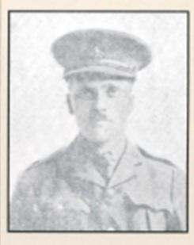
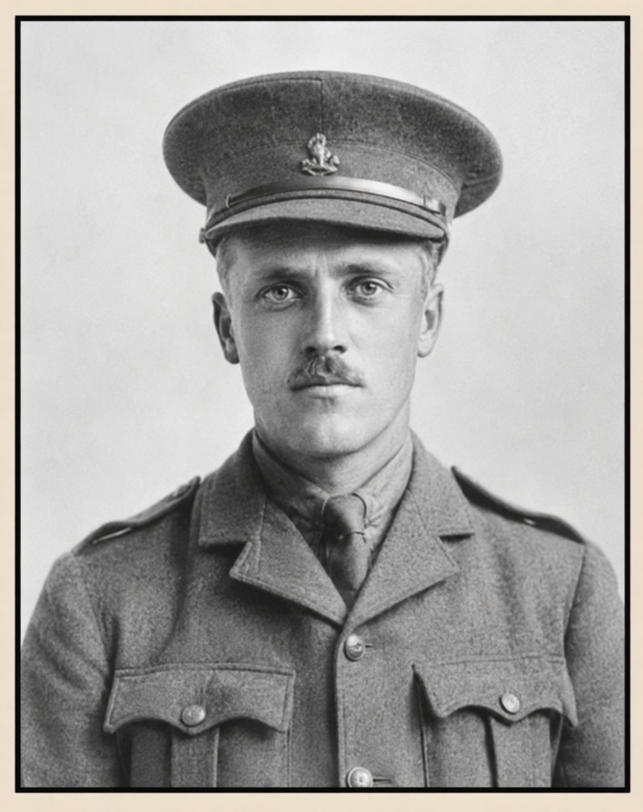

Jack Best


Jack Best was a Royal Air Force pilot who died aged 23 from injuries sustained when his aircraft collided with another aircraft in mid-air over Warwickshire on 24 September 1918, three days before his death in Coventry General Hospital.
Civilian Life - Hedley was born in Woolpit, Suffolk, on 28 May 1895, the son of John Carter Berry and Lettice Berry. The family later lived at 49 Roxborough Park, Harrow, and subsequently at Trinity Avenue, Westcliff-on-Sea. His father was an engineer. Hedley was also reported to have spent a year in Paris, giving him a knowledge of French. Hedley attended John Lyon School, where his name is commemorated on the school's First World War memorials. Details of his occupation before his military service have not been established in the research Census research is not entirely clear but, according to the 1901 Census, he may have been one of 7 siblings..
His father, Arthur Senior, was a builder and engineer who died on 3 June 1911. Arthur was the eldest of the children from his father's first marriage. His siblings included Hilda Jessie Bates and Sidney Edgar Bates, together with his younger step-sisters Caroline Louise, Margaret and Mabel Joyce Bates.
Arthur attended John Lyon School and, by 1911, he was recorded studying at the City and Guilds of London Institute as an electrical student.
Military Life - Hedley served during the WW1 and became a pilot in the Royal Flying Corps. Before his death he had served with No. 21 Squadron, flying over the Somme and Messines Ridge in 1916. The research records him as a Lieutenant because the RFC was part of the Army and used Army ranks. When the Royal Air Force was formed by merging the RFC with the Royal Navy Aviation Service in April 1918, his rank was changed to Flight Lieutenant.
On 24 September 1918, Hedley was flying an RE8 biplane, serial C2897, belonging to the 1 Aircraft Acceptance Park, over Radford in Warwickshire. No. 1 Aircraft Acceptance Park was a vital aviation facility at Radford Aerodrome near Coventry. It served as a primary hub where newly manufactured aircraft from the region's massive industrial base were assembled, flight-tested, and officially accepted into service. The aircraft collided in mid-air with an SE5A fighter, serial F851. The two aircraft became locked together before crashing. Hedley's observer and mechanic, 3rd Air Mechanic Percival George Welsman, was killed immediately. Hedley survived the crash but suffered serious injuries.
Hedley was taken to Coventry General Hospital, where he died from wounds three days later, on 27 September 1918, he was 23.. A subsequent inquest recorded that the two aircraft had collided at a height of approximately 150 feet and that Hedley had suffered four compound fractures. The jury returned a verdict of accidental death. However, the coroner did recommend measures be taken to improve pilots' field of vision.
Hedley was buried at Southend-on-Sea (Sutton Road) Cemetery.